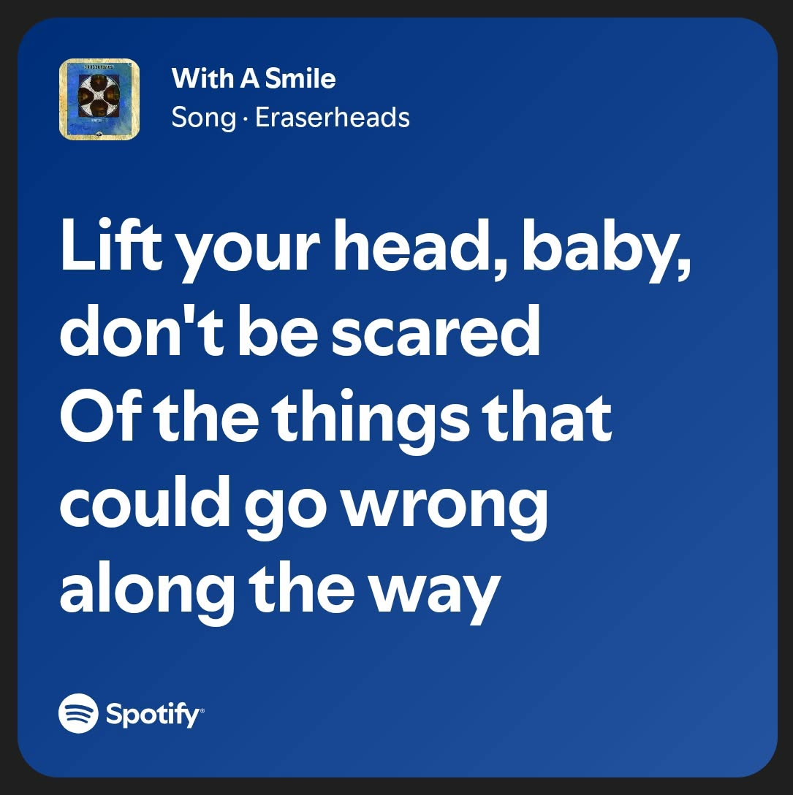

Song of The Year
Some songs just end up belonging to certain people.
With A Smile
There are songs you listen to because they're good, and then there are songs you choose for someone because of what you want them to understand. I think this one became the second kind for me.
I know you have your worries and doubts, especially when it comes to what comes next. And honestly, I don't think any of us really know what the future is going to look like. Even the present can change in ways we don't expect.
This part is probably why I chose it for you.

I don't mean that as a promise that nothing will go wrong. Things will. That's just part of being alive, and I don't think uncertainty is something we can completely avoid.
I just hope you remember that you don't have to know exactly how everything will turn out before you let yourself move forward.
You can worry about the future and still enjoy where you are now. You can have doubts and still keep going. You can change your mind, take a different path, or realize that what you once wanted isn't what you want anymore.
You don't have to have everything figured out at eighteen.
And maybe that's okay.
Some songs just say something you didn't quite know how to say yourself.